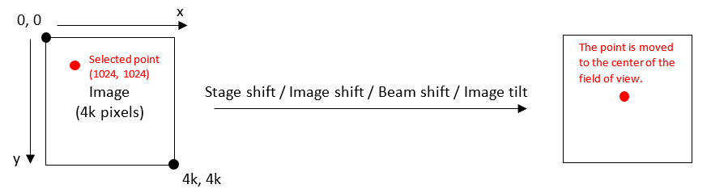

Centers the specified image point in the field of view.
move_to_pixel(image_point, detector)
move_to_pixel(image_point, detector, settings)| image_point | Point | list | tuple | Point coordinates in pixels. |
| detector | str | The name of the detector. Enumeration CameraType or DetectorType can be used. |
| settings | MoveToPixelSettings | Structure for additional setting parameters. All settings are default if not specified. |
The origin of the pixel coordinate system is in the upper left corner of the image. The pixel position does not have to be limited to the size of the image, it can also be outside the field of view or even be negative.

Several parameters needed for the pixel transformation are fetched from the current state of the system: optical_mode, is_eftem_on, acceleration_voltage, illumination_mode, objective_lens_mode, probe_mode, projector_mode, camera_length or magnification. It is recommended to use scanning detectors only in STEM - otherwise the required calibrations might be missing.
By default, AutoScript assumes the maximum possible size of the image. In the case of STEM, this is the maximum scanning resolution of the system. In TEM, this value depends on the camera used; it is the maximum resolution of the camera. This may lead to incorrect transformations if the size is not properly specified.
Move to pixel uses safe stage moves by default, but in some cases it is needed to use unsafe moves instead. Parameter use_safe_stage_moves can be used to override this behavior. It is recommended to use this option with caution.
Stage moves are supported only in TEM + IMAGING and STEM + DIFFRACTION mode combinations. The following table shows how the optical transformations are determined:
| TEM | STEM | |
|---|---|---|
| IMAGING | Image shift | Unsupported |
| DIFFRACTION | Image tilt (diffraction shift) | Beam shift |
The first example shows move to pixel with any method in STEM optical mode:
# Set optical mode to STEM and diffraction
microscope.optics.optical_mode = OpticalMode.STEM
# Set camera length to the largest value
microscope.optics.camera_length.value = microscope.optics.camera_length.available_values[-1]
print(f"Stage position before: {microscope.specimen.stage.position}")
print(f"Beam shift before: {microscope.optics.deflectors.beam_shift}")
# Move to the right by 20 pixels on the X axis (2068 - 4096 / 2 = 20 pixels)
microscope.specimen.stage.move_to_pixel(Point(2068, 2048), DetectorType.HAADF,
MoveToPixelSettings(method=MoveToPixelMethod.ANY))
print(f"Stage position after: {microscope.specimen.stage.position}")
print(f"Beam shift after: {microscope.optics.deflectors.beam_shift}")
The next example shows move to pixel with optics method in TEM optical mode:
# Set optical mode to TEM
microscope.optics.optical_mode = OpticalMode.TEM
print(f"Image shift before: {microscope.optics.deflectors.image_shift}")
# Center image point [1024, 1024] - bottom right corner since the size of the image is also 1024
microscope.specimen.stage.move_to_pixel(Point(1024, 1024), CameraType.BM_CETA,
MoveToPixelSettings(image_size=1024, method=MoveToPixelMethod.OPTICS))
print(f"Image shift after: {microscope.optics.deflectors.image_shift}")
The next example shows that move to pixel can also be called without additional settings (all settings are default in this case):
print(f"Stage position before: {microscope.specimen.stage.position}")
# Center image point [1024, 1024]
microscope.specimen.stage.move_to_pixel(Point(1024, 1024), CameraType.BM_CETA)
print(f"Stage position after: {microscope.specimen.stage.position}")
The next example shows that a list or a tuple can be used instead of point:
# Use a list to specify the move to pixel point
microscope.specimen.stage.move_to_pixel([1024, 1024], CameraType.BM_CETA)
# Use a tuple to specify the move to pixel point
microscope.specimen.stage.move_to_pixel((1024, 1024), CameraType.BM_CETA)
optics.optical_mode
optics.deflectors.image_shift
optics.deflectors.beam_shift
MoveToPixelMethod